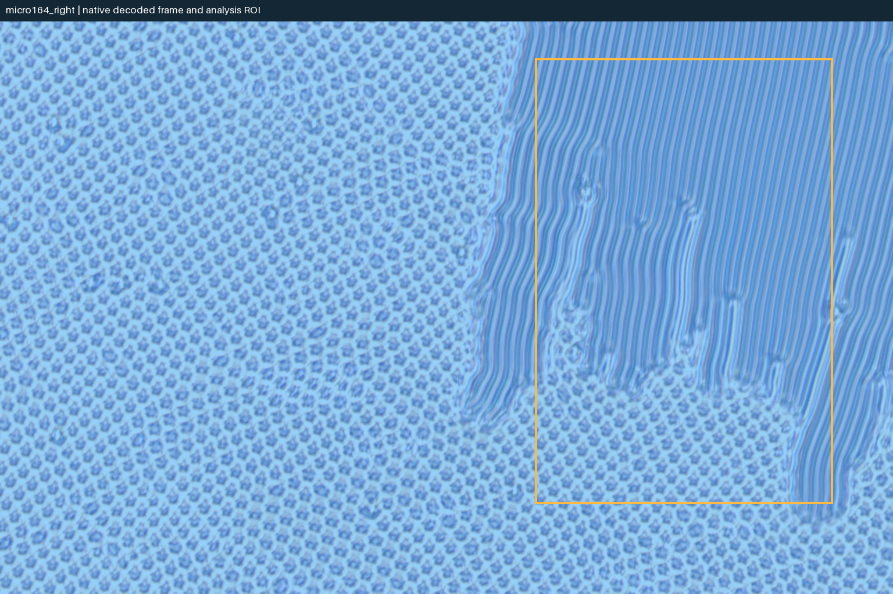
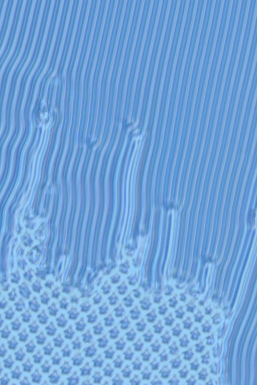
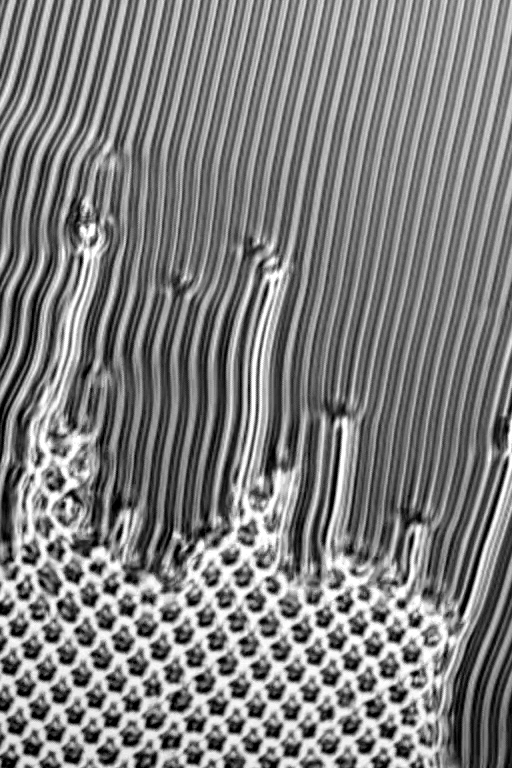
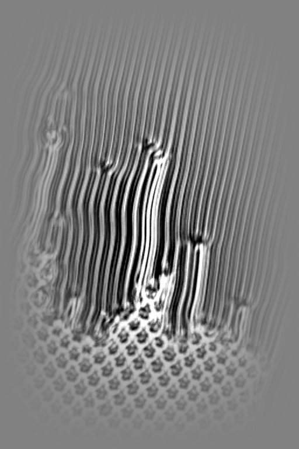
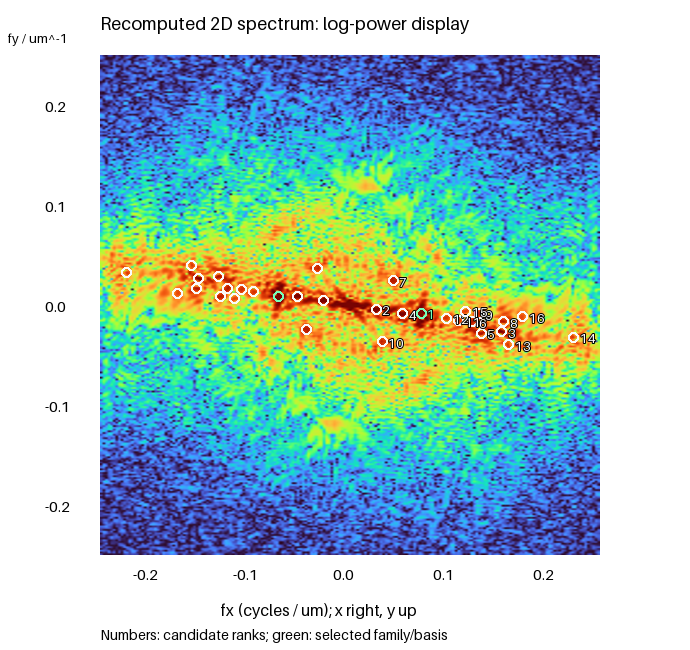
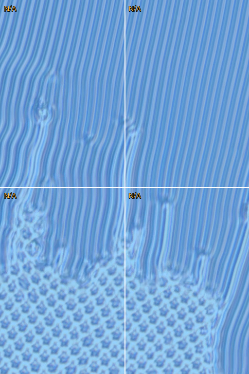
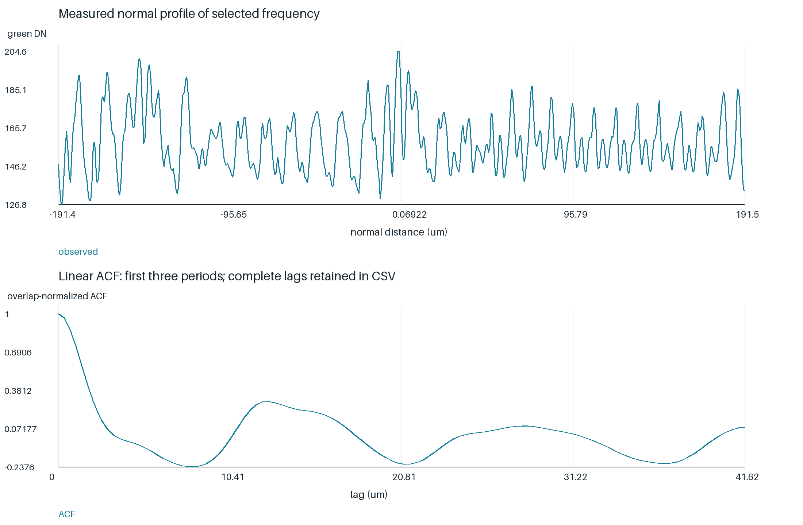

同帧单方向条纹：与左侧格纹的空间对照
原生RGB像素重新计算；采样为x=0.75、y=0.75 µm/px。裁剪保持原标尺。全部候选保留，频率族和整数基底采用现有研究算法。
频谱质量门控：通过候选筛选。原对比度、带内功率与峰/背景分数保留在完整记录。
| 最强FFT峰周期 µm | 主支持频率族 µm | 低阈值族 µm | 频率族歧义 | 整数基底coverage | 两模态共同支持分块 |
|---|---|---|---|---|---|
| 13.9237 | 13.9237 | 13.9237 | 否 | — | 不适用：未提出合格二维基底 |





| 族中倍频 | 候选秩 | 周期 µm | 频率x | 频率y |
|---|---|---|---|---|
| 1 | 1 | 13.9237 | 0.0713534 | -0.00817341 |
| 2 | 3 | 6.49888 | 0.151565 | -0.0265469 |
| 3 | 14 | 4.42654 | 0.223607 | -0.0321726 |

| 变化 | 频率角色 | 相对频率差 | 匹配 |
|---|---|---|---|
| crop_90 | family | 0.0060272 | 是 |
| crop_80 | family | 0.00920825 | 是 |
窗口变化后的独立频率族候选（探索性，不把低支持候选作为已测周期）：
| 裁剪 | 主阈值候选 µm | 低支持阈值候选 µm |
|---|---|---|
| crop_90 | 13.9809 | 13.9809 |
| crop_80 | 13.9846 | 13.9846 |
| 所选频率周期 µm | 附近ACF峰周期 µm |
|---|---|
| 13.9237 | 12.6801 |

全部频率候选CSV · 族、基底、裁剪和分块完整证据 · 原数值功率谱
这些是图像纹理频率候选，不唯一确定分子取向基频或光学相位。当前静态案例重算裁剪和分块，不声称重做了未随包提供的时间邻帧检验。